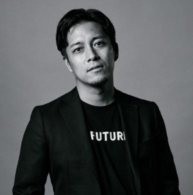

AIを、組織に実装する。
AI人材を入れるだけでは、組織は変わりません。
こんな状況、心当たりはありませんか？
外部のAIエンジニアに任せたが成果が出ず、結局自社エンジニアが対応している
試作・PoCはできるが、本番に上がらない
研修を実施したが、現場では誰も動けていない
特定の担当者に依存し、チームに技術が広がらない
AI JEDIは、人を入れるだけでなく「動く環境と型」をセットで組織に渡すことで、これらを同時に解消します。
他社との決定的な違い
外部エンジニアを入れた。しかし動いているのはその人だけで、チームには何も移転されない。担当者が抜けた瞬間、開発が止まる。
AI JEDIは、この構造ごと変えます。
AI Dev OSを核に、研修・受託開発・FDE投入の3つの軸が導入→適用→運用の順で機能します。
AI Dev OS
開発スターターリポジトリ
すぐ動き始められるテンプレ一式
AI駆動開発プレイブック
AIと人間の役割分担・手順を標準化
サブエージェント設計
仕様〜リリースまでの型を固定
GitHub運用テンプレ
レビュー・CI・品質ゲートの最小セット
ガバナンス雛形
PoC→本番に上げるチェックリスト
人だけでなく「動く環境と型」ごと、組織に実装されます。
導入から内製化まで、一本の導線
3つの軸は独立したサービスではありません。共通のAI Dev OSを土台に、顧客を次のフェーズへ自然に引き上げる成長導線として設計されています。
研修・人材育成
対象はDX部門・事業部の混成チーム（非エンジニア可）。
基礎・実践・環境構築の3段階で、期間は2〜4週間。
チームが共通の型で動き始めている状態
- AI Dev OS一式（開発環境・テンプレ・運用手順）
- モックプロトタイプ
- 研修後すぐ動き出せる開発環境
受託開発
AI駆動により、従来の受託開発では数週間〜数ヶ月かかる試作を最短1〜2週間で納品。
顧客の不確実性(要件 / 業務 / セキュリティ)をモックで潰すことで、意思決定のスピードが根本から変化。
社内合意が取れ、本開発への投資判断が完了している状態
- 触れて確認できるUIモックアップ
- 業務フロー・簡易評価レポート
- 技術方針・本開発ロードマップ
- ガバナンス・運用設計ドキュメント
FDE人材投入
FDEアサインと現場投入（月次契約）。初週からIssue・PR・レビュー・CIを整備し、AI駆動作法をチームへインストール。KPI共有と内製化までの伴走。
担当者が変わっても品質が落ちない仕組みが組織に定着し、内製化が完了している状態
- AI駆動開発が自走するチーム体制
- 運用プレイブック（組織に残る再現性ある型）
- 内製化完了までのKPIレポート
AI駆動開発の型を、チームごとインストールする
座学で終わらせません。研修の成果物としてAI Dev OS一式を納品し、終了後すぐに現場が動き出す状態を作ります。
- 基礎：生成AIの活用・プロンプト設計・業務への適用
- 実践：AI駆動開発の型・GitHub運用・レビュープロセス
- 環境構築：AI Dev OS導入・チームへのインストール
チームが共通の型で動き始めており、次の業務課題をAIで解く準備が整っている。研修成果物の開発環境がそのまま本開発に使える状態。
- AI Dev OS一式（開発環境・テンプレ・運用手順）
- モックプロトタイプ
- 研修後すぐ動き出せる開発環境
（後から追記予定）
「触れるモック」を最短納品し、意思決定を加速させる
まずモックで要件の不確実性を潰します。AI駆動により最短1〜2週間で納品。確度が上がった状態で本開発へ移行するため、手戻りが起きません。
AIモックスプリント（最短1〜2週）
技術方針・次フェーズ見積を提示
本開発・段階導入
ガバナンス・運用設計まで定着
触れるモックで社内合意が取れており、本開発への投資判断が完了している。ガバナンスと運用設計が整い、PoC止まりにならない基盤ができている。
- 触れて確認できるUIモックアップ
- 業務フロー・簡易評価レポート
- 技術方針・本開発ロードマップ
- ガバナンス・運用設計ドキュメント
苗マネ — 煩雑な農園管理を、スマホひとつで完結。
2日後に納品。種まき登録・出荷管理・在庫状況・出荷予定表をひとつのダッシュボードで管理できるモックアップを実現。
PaintVision — 家の壁色、スマホで着せ替え。
翌日に納品。BEFORE/AFTERをスライダーで比較できるUIを実現。複数の配色パターンをワンタップで切り替えられるモックアップを納品。
人と仕組みをセットで現場に投入し、内製化まで完成させる
FDE（Field Deployment Engineer）は、現場に入り込みプロジェクトを前に進める実装型エンジニアです。AI Dev OSと運用プレイブックをセットで持ち込み、チームの自走を支援します。
- FDEアサインと現場投入（月次契約）
- 初週からIssue・PR・レビュー・CIを整備し実装成果を提供
- AI駆動作法のチームへのインストール（レビュー会・ペア作業）
- KPI共有と内製化までの伴走
個人のスキルに依存せず、チーム全体でAI駆動開発が回っている。担当者が変わっても品質が落ちない仕組みが組織に定着し、内製化が完了している。
- AI駆動開発が自走するチーム体制
- 運用プレイブック（組織に残る再現性ある型）
- 内製化完了までのKPIレポート
（後から追記予定）
チーム
投資・事業・技術の三軸で、エンタープライズのAI実装を推進します。
資本政策・ファイナンス・アライアンスを担当。大型連携・投資家対応から事業のスケールを設計する。
- 2012年〜 エンジェル投資家として活動
- 2018年〜 株式会社ジビジョン 代表取締役
- 2024年〜 適格機関投資家（金融庁登録）

エンタープライズ営業・パートナー開拓を担当。NTT DATA連携をはじめ顧客基盤の拡大を主導。
- 2019年〜 イグニション・ポイント株式会社
- 2022年〜 株式会社ユーザベース
技術戦略・品質担保・AI Dev OS整備・FDE人材の目利きと育成を担当。エンタープライズ現場での実装経験を核に技術を設計。
- 2023年〜 株式会社TierMind 代表取締役
- 2024年〜 TOYOTA Connected AI/スキリング責任者
- 2025年〜 株式会社worth CAIO
AI JEDIが提供するのは、サービスの組み合わせではありません。
研修でAI Dev OSを組織に導入し、
受託開発で実プロジェクトに適用し、
FDE投入で運用・内製化まで完成させる。
この一本の導線を通じて、「AIが当たり前に使われている組織」を作ることが、私たちの仕事です。
どのステップからでも始められます。まずは貴社の現状と課題をお聞かせください。